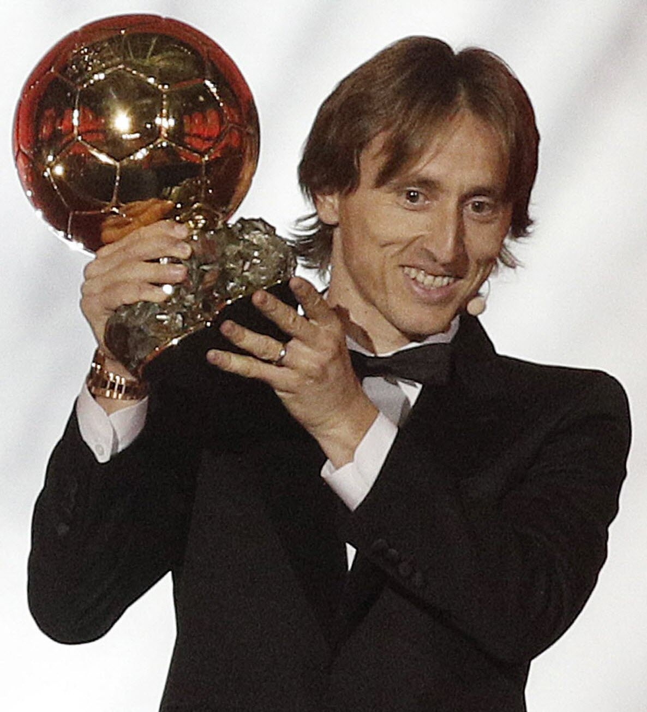

Né en Croatie, à Zadar, le 9 septembre 1985, Luka Modric est un footballeur international croate évoluant au poste de milieu de terrain.
Formé au Dinamo Zagreb, Luka Modric franchit la frontière croate en 2003 pour signer son premier contrat professionnel sous les couleurs du club bosnien de Zrinjski Mostar.
Un an après son départ, le milieu de terrain retrouve son pays natal et intègre l’effectif de l’Inter Zapresic, puis il effectue son retour au Dinamo Zagreb entre 2005 et 2008.
Après une nouvelle destination, l’Angleterre, entre 2008 et 2012, où il porte le maillot de Tottenham, Luka Modric décide de rejoindre l’Espagne et, après un transfert houleux et un bras de fer avec les dirigeants du club anglais, il endosse la tunique du Real Madrid.
Sous les couleurs du Real, il gagne la Liga en 2017, 2020 et 2022, la Ligue des Champions en 2014, 2016, 2017, 2018 et 2022 ainsi que le mondial des clubs lors de ces mêmes années.
Luka Modric a été le roi du football en 2018.
Le milieu de terrain du Real Madrid a été distingué par unanimité comme le meilleur joueur du monde.
Après avoir remporté le Prix The Best du Joueur de la FIFA et le Prix de Joueur de l'Année de l'UEFA 2017/18, le Croate a été couronné à Paris avec le Ballon d'Or.
